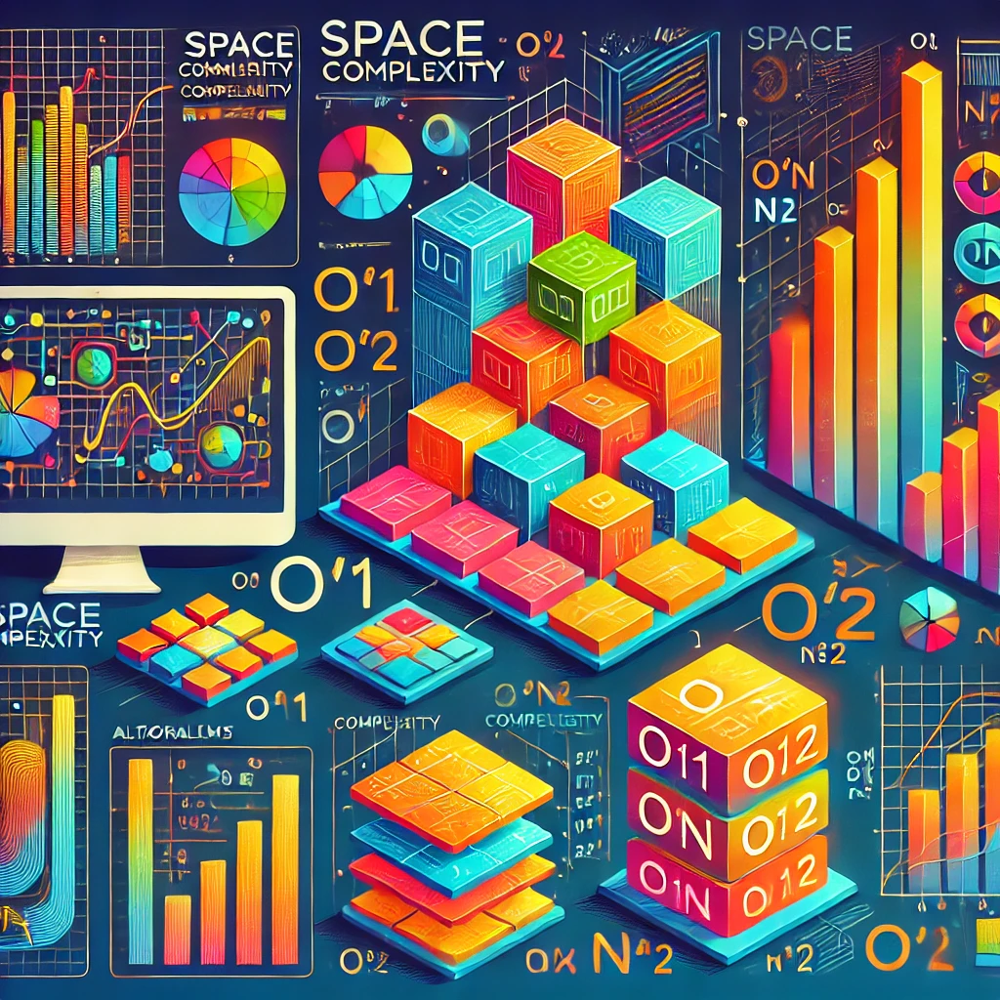

Arrays are a basic data structure where elements are stored in contiguous memory locations. They are highly efficient for accessing elements by their index, which allows constant time access O(1). However, their size is fixed after declaration, which limits flexibility.
Linked Lists consist of nodes, where each node contains data and a reference (or link) to the next node in the sequence. Unlike arrays, linked lists do not store elements in contiguous memory, allowing them to be dynamically resized.
Stacks follow a Last In, First Out (LIFO) principle, meaning the last element added is the first to be removed. They are commonly used in programming for tasks like function call management, undo operations, and parsing expressions.
Queues follow a First In, First Out (FIFO) principle, meaning the first element added is the first to be removed. They are widely used in scenarios where data must be processed in order, such as job scheduling, message processing, and printer task management.
Time Complexity is a measure of the computational time taken by an algorithm relative to its input size. It helps evaluate how an algorithm scales as the input grows, usually expressed with Big O notation (e.g., O(1), O(n), O(n^2)).
O(1): Constant time, e.g., accessing an array element by index.O(n): Linear time, e.g., finding an element in an unsorted list.O(n^2): Quadratic time, e.g., bubble sort for sorting an array.Time Complexity is crucial for determining the efficiency of algorithms, especially for large datasets, where high-complexity algorithms can significantly impact performance.
Space Complexity measures the total memory required by an algorithm relative to its input size. It includes both the space needed for input data storage and any auxiliary data structures used during processing.
O(1): Constant space, e.g., swapping two variables.O(n): Linear space, e.g., storing an array of n elements.O(n^2): Quadratic space, e.g., creating an n x n matrix.Optimizing Space Complexity is important for algorithms on memory-constrained systems, where managing auxiliary space efficiently is key.
Q1. What is the difference between an Array and a Linked List?
A1. Arrays have fixed sizes and allow constant time access to elements, but resizing is challenging. Linked Lists, on the other hand, offer dynamic resizing, but accessing elements requires traversing nodes sequentially.
Q2. Can you explain the concept of Time Complexity?
A2. Time Complexity refers to the time required by an algorithm to complete based on the size of its input. It helps in understanding the efficiency of an algorithm, especially for large inputs.
Q3. Describe a real-world scenario where you would use a Queue.
A3. A Queue can be used in job scheduling systems, where tasks are processed in the order they arrive, ensuring fairness by following the First In, First Out principle.